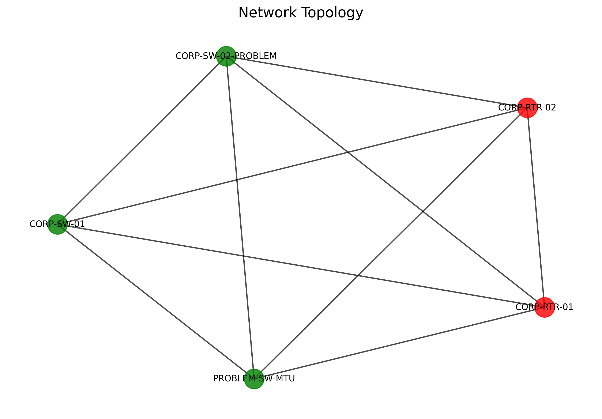

Generated: 2025-08-24 05:45:47
Tests Passed
Success Rate
Overall Status
Status: [OK] Success
Devices Parsed: 5
Devices: switch2, switch_problem, router2, router1, switch1
Status: [OK] Success
Network Nodes: 5
Network Links: 10
Status: [OK] Success
Issues Found: 27
Status: [OK] Success
Network Capacity: 807.1 Mbps
Utilization: 20.2%
Recommendations: 0
Start Time: 2025-08-24T05:45:47.080377
End Time: None
Output Directory: outputs/test_results/simple